27/12/2024
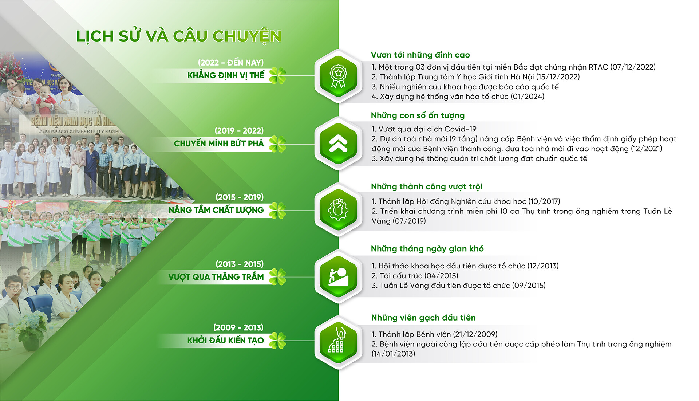
Ngày 21/12/2009, Phòng Khám Đông Y Nguyễn Hữu Toàn (gọi tắt là AF HANOI) chính thức được thành lập với những thành viên đầu tiên chung ý chí, mong muốn kiến tạo nên một tương lai cho AF HANOI trở thành cơ sở uy tín ngoài công lập chuyên sâu trong điều trị Nam khoa, Vô sinh – Hiếm muộn. Chủ tịch Lê Trung Hiếu trở thành người thuyền trưởng, kiên định với mục tiêu đã chọn. Bên cạnh anh lúc đó, không thể không nhắc đến sự đồng hành đặc lực của các thành viên Hội đồng quản trị, đội ngũ Y Bác sĩ, Nhân viên y tế Bệnh viện.
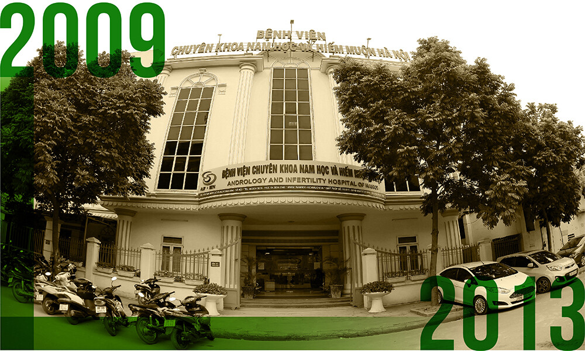
Nhớ về những ngày đầu công tác tại Bệnh viện, Phó Giám đốc Nguyễn Anh Tuấn chia sẻ: “Một năm trước đó, tôi quyết định đưa gia đình từ Nghệ An ra Hà Nội để tập trung quản lý dự án đầu tư Bệnh viện. Ngay từ thời gian đầu, Hội đồng quản trị đã hỗ trợ rất nhiều để tôi và gia đình nhanh chóng ổn định cuộc sống tại nơi ở mới. Vì thế, tôi an tâm công tác, không quản gian khó, dành trọn tâm sức cùng anh em gây dựng Bệnh viện từ những viên gạch đầu tiên. Khi ấy, tôi vừa quản lý các đội thi công vừa quản lý tài chính nên Ban Lãnh đạo có giao cho tôi một nhiệm vụ đặc biệt. Đó là phải nghiên cứu đầu tư hệ thống an ninh, an toàn và trang thiết bị tối tân để đảm bảo chất lượng khám chữa bệnh cho khách hàng và môi trường làm việc cho CBNV ngay cả khi kinh tế còn nhiều khó khăn.”
Là một trong những nhân sự quan trọng, đóng góp nhiều vào quá trình xây dựng Bệnh viện, ThS.DS. Trịnh Tố Quyên – Trưởng khoa Dược, Chủ tịch Công đoàn luôn nhớ rõ cảm giác hạnh phúc khi hoàn thành nhiệm vụ chuẩn bị hồ sơ thẩm định Bệnh viện và thành lập Trung tâm Hỗ trợ sinh sản: “Lần đầu đi xin giấy phép, bản thân mình cũng thấy mông lung và lo lắng. Thời gian chuẩn bị hồ sơ đến khi có kết quả thẩm định thành công kéo dài hơn một năm với rất nhiều lần sắp xếp hồ sơ, giấy tờ. Trong suốt thời điểm ấy, mình luôn nhận được sự hỗ trợ, động viên, chỉ đạo sát sao của Ban Lãnh đạo. Khi Bệnh viện được cấp phép hoạt động, niềm hạnh phúc hiện diện trên gương mặt của tất cả anh chị em CBNV và tinh thần làm việc cũng hào hứng, phấn khởi hơn.”
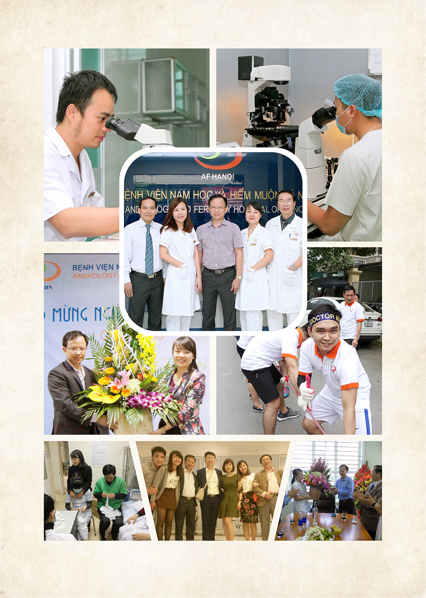
Theo dòng cảm xúc về những ngày Bệnh viện còn khó khăn, ThS.BS. Lê Thị Thu Hiền – Giám đốc Chuyên môn tâm huyết kể lại: “Tôi vẫn nhớ, rất nhớ những ngày đầu tiên ấy… Cơ sở vật chất thiếu thốn, các anh chị em cố gắng phân chia nhau tự làm mọi việc để tận dụng và tiết kiệm chi phí, nhân lực cũng ít, một người phải kiêm nhiệm nhiều việc. Bác sĩ không chỉ phụ trách tư vấn, thăm khám mà còn kiêm cả việc siêu âm, xét nghiệm, chụp X-quang, làm thủ thuật, phẫu thuật, cả Hiếm muộn và Nam khoa. Ngoài ra, còn dành thời gian đọc sách, góp nhặt kiến thức, tranh thủ các dịp hội thảo hay tập huấn để học hỏi, rồi xây dựng hoàn thiện các thủ tục giấy tờ, quy trình chuyên môn. Chuyện phải làm đến 7 giờ, 8 giờ tối là bình thường.
Khi đó, bệnh nhân chưa đông, mọi người đến Bệnh viện được tiếp đón, hỏi han như người nhà. Nhân viên y tế nhớ từng bệnh nhân, biết được cả hoàn cảnh gia đình của họ. Cho đến những năm sau, khi bệnh nhân quay trở lại Bệnh viện, mọi người vẫn nhớ nhau và hàn huyên như người trong nhà đi xa mới về vậy. Thân tình là thế, bệnh nhân có vấn đề, nhân viên Bệnh viện sẵn sàng thức trắng đêm, nằm cạnh bệnh nhân, thậm chí xung phong trực xuyên Tết để chăm sóc cho họ. Như một cách tự nhiên, dần dần, mọi người cứ làm việc bằng sự chân thành, trách nhiệm, bằng cái tâm của một người thầy thuốc: buồn với nỗi buồn của bệnh nhân, vui với những hạnh phúc của họ. Cả Bệnh viện đã nhẹ nhàng cùng nhau vượt qua khó khăn như thế. Ngày đó, Bệnh viện phải thực hiện 20 ca Thụ tinh trong ống nghiệm (IVF) với sự giúp đỡ và giám sát, của Bệnh viện Phụ sản Trung ương mới được cấp phép. Khi ấy, một số ca theo yêu cầu, Bệnh viện phải chuyển lên tuyến trên, nếu bình thường, chỉ cần viết giấy chuyển lên nhưng với sự tận tâm, trách nhiệm, nhân viên y tế của Bệnh viện đã đồng hành cùng bệnh nhân, đưa bệnh nhân đi làm xét nghiệm, chờ đợi bệnh nhân chọc trứng, chọc mào tinh. Không chỉ có một ngày mà cả một quá trình. Khi bệnh nhân không thành công, khóc hết nước mắt, nhân viên của Bệnh viện lại động viên, an ủi. Mặc dù thất bại nhưng bệnh nhân không nản lòng, luôn tin tưởng Bệnh viện. Chờ đến khi Bệnh viện được cấp phép, hoạt động, bệnh nhân lại quay lại Bệnh viện điều trị. Không phụ sự kỳ vọng, bệnh nhân sinh con thành công và đón được em bé về nhà.”
Trong số rất nhiều kỷ niệm về ngày đầu thành lập, không thể không nhắc đến những buổi trực chăm sóc bệnh nhân: “Lúc đó số lượng nhân viên y tế chưa nhiều, cả kíp trực cũng chỉ có 1-2 người. Những việc nhỏ nhất như: gấp gạc, vệ sinh phòng mổ, giặt quần áo… đều tự tay mình thực hiện. Có trường hợp điều trị quá kích buồng trứng phải ở lại Bệnh viện qua Tết, chồng của bệnh nhân là người khuyết tật phải ngồi xe lăn nhưng anh luôn dành sự quan tâm, kề cận bên vợ. Vậy là kíp điều dưỡng có cơ hội được chăm sóc gia đình nhỏ trên hành trình tìm con. Lúc ấy, cơ sở vật chất còn nhiều hạn chế nhưng mình luôn được truyền cảm hứng từ đội ngũ Lãnh đạo tậm tâm, làm gương đi đầu, xông pha, không quản ngại việc nhỏ, việc to. Sự lăn xả và trách nhiệm đã tạo nên ngôi nhà thứ 2 giúp mình phấn đấu nhiều hơn, tin tưởng vào tương lai rộng mở với sự phát triển của Bệnh viện, lan tỏa giá trị tốt đẹp cho cộng đồng” – Điều dưỡng trưởng bệnh viện, Chị Kiều Mai chia sẻ.
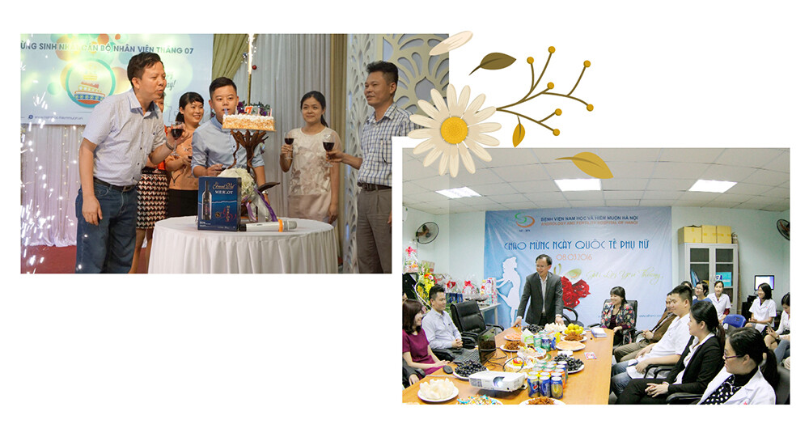
Với tinh thần trách nhiệm, yêu nghề, Điều dưỡng trưởng Phòng Khám – Chị Nguyễn Thị Chung luôn ghi nhớ nền tảng được vun xới từ ngày đầu làm việc tại AF HANOI: “Có rất nhiều ca bệnh khó mà mình trực tiếp được chăm sóc nhưng ấn tượng sâu sắc nhất, có lẽ là ca quá kích buồng trứng chuyển biến nặng. Khi ấy, đội ngũ Y Bác sĩ đều tập trung theo dõi liên tục và hướng dẫn người bệnh kỹ lưỡng chế độ ăn uống, dinh dưỡng. Cũng chính sự chăm sóc tận tình của Bệnh viện mà người nhà cũng như người bệnh cảm thấy an tâm, tin tưởng hơn. Sau mỗi ca bệnh đặc biệt, mình học hỏi thêm nhiều kinh nghiệm và củng cố sự tận tâm, trách nhiệm. AF HANOI với mình là gia đình thứ hai. Thời điểm đó, số lượng CBNV còn chưa nhiều nên mọi người đều san sẻ công việc cùng nhau. Săng, gạc không nhập sẵn nên chúng mình cứ chia nhau tự cắt, tự gấp. Bữa cơm trưa là kỷ niệm chắc chắn không bao giờ quên từ việc phụ nhặt rau, nấu cơm đến phân chia lịch rửa bát. Sau ca thủ thuật muộn, mọi người đói là đi, đôi lúc thấy thoáng chút cảm xúc tủi thân nhưng tất cả động viên nhau cố gắng vì người bệnh, làm việc không quản ngại thời gian, công sức. Tinh thần tự giác và sự động viên của Lãnh đạo, đồng nghiệp đã giúp chúng mình vượt qua giai đoạn khởi đầu nhiều thử thách.”
Không vượt ngoài kỳ vọng và sự nỗ lực của tập thể CBNV Bệnh viện, ngày 14/01/2013, AF HANOI chính thức trở thành đơn vị y tế ngoài công lập đầu tiên ở miền Bắc được cấp phép thực hiện kỹ thuật Thụ tinh trong ống nghiệm. Nền tảng quý báu ấy đã là hành trang cho AF HANOI từng bước kiến tạo nên những thành tựu vượt trội trong tương lai và trở thành ngôi nhà hạnh phúc của rất nhiều cặp vợ chồng vô sinh – hiếm muộn.
Trải qua 5 năm đầu xây dựng và phát triển, AF HANOI đã đạt được một số thành tựu nổi bật nhất định như thành lập Labo Hỗ trợ sinh sản nơi được xem như trái tim của Bệnh viện với trang thiết bị hiện đại nhất thời bấy giờ, góp phần gia tăng hiệu quả điều trị cho người bệnh. Tuy nhiên, dưới tác động khách quan của bối cảnh xã hội và khát vọng chinh phục hoài bão lớn trong tương lai đã khiến cho AF HANOI đứng trước mâu thuẫn về định hướng phát triển. Tháng 04/2015, quyết định mang tính chiến lược được Ban Lãnh đạo đưa ra – “Tái cấu trúc Bệnh viện”, hướng đến mục tiêu quản trị bền vững – “Tất cả vì người bệnh”, xây dựng môi trường làm việc hạnh phúc cho CBNV.
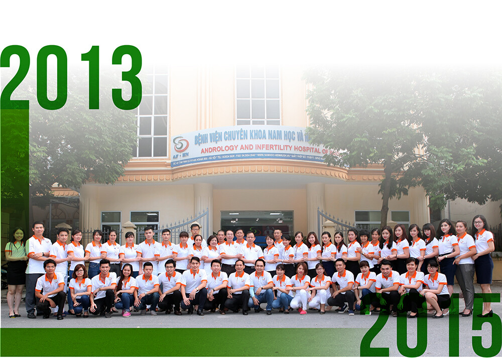
Điều quan trọng nhất trong quá trình tái cấu trúc được xác định là ổn định đội ngũ nhân sự bởi Chủ tịch Lê Trung Hiếu hiểu rằng, những biến động nội bộ sẽ khiến không ít thành viên cảm thấy lo lắng, trăn trở và xao động. Anh đã dành tâm sức chia sẻ, lắng nghe câu chuyện của từng nhân viên và bày tỏ cam kết, mục tiêu, định hướng phát triển cụ thể trong tương lai. Sau buổi trò chuyện ấy, ThS.BS. Lê Thị Thu Hiền suy tư: “5 năm của mình không quá dài nhưng cũng đủ để mình gắn bó, yêu thương và coi AF HANOI là ngôi nhà thứ hai. Mình yêu cái nghề này, rồi còn bao nhiêu CBNV đang làm việc, bao nhiêu bệnh nhân đang điều trị dang dở và bao nhiêu mầm phôi vẫn đang chờ đợi. Lúc đầu, cũng mông lung lắm nhưng rồi tất cả các anh em đều sát cánh bên người lãnh đạo có tâm, có tẩm là Chủ tịch Lê Trung Hiếu.”
Y đức và lòng hăng say với con đường sự nghiệp đã chọn của ThS. Nguyễn Minh Đức – Trường Labo Hỗ trợ sinh sản được Chủ tịch Lê Trung Hiếu tiếp lửa tinh thần: “Em cứ lo phát triển chuyên môn, còn những việc khác, các anh sẽ lo”. Lý tưởng mấu chốt của Ban Lãnh đạo là “phục vụ người bệnh” tương đồng với kim chỉ nam hành động của ThS. Nguyễn Minh Đức, anh chia sẻ: “Sự phù hợp đã giúp cho mình quyết định gắn bó với AF HANOI. Mình được tạo điều kiện tốt nhất về cơ hội học tập, thiết bị hiện đại hàng đầu lúc bấy giờ như tủ ba khí đầu tiên ở miền Bắc, dù thời điểm đó còn nhiều khó khăn, thách thức. Mình nhận ra sự hòa hợp trong tâm niệm làm việc của mình và Ban Lãnh đạo: với Bệnh nhân – tuyệt đối phục vụ, với Bệnh viện – tuyệt đối trung thành. Mình trân trọng từng mầm phôi của người bệnh, nâng niu niềm hy vọng làm cha mẹ của mỗi gia đình.”
Đối với BSCKI. Phạm Văn Hưởng – Phó Giám đốc Chuyên môn, thứ quan trọng nhất để CBNV quyết tâm ở lại, chung tay góp sức tiếp tục xây dựng Bệnh viện đó là: “Mình nhìn nhận, đặt niềm tin ở người lãnh đạo, đường hướng phát triển Bệnh viện bền vững trong tương lai.” Bằng niềm tin vững vàng và trách nhiệm với người bệnh, AF HANOI đã thực hiện thành công quá trình tái cấu trúc, ổn định đội ngũ nhân sự cốt cán, có chung phẩm chất, chung lý tưởng và chung mục tiêu hành động trên hành trình phía trước.
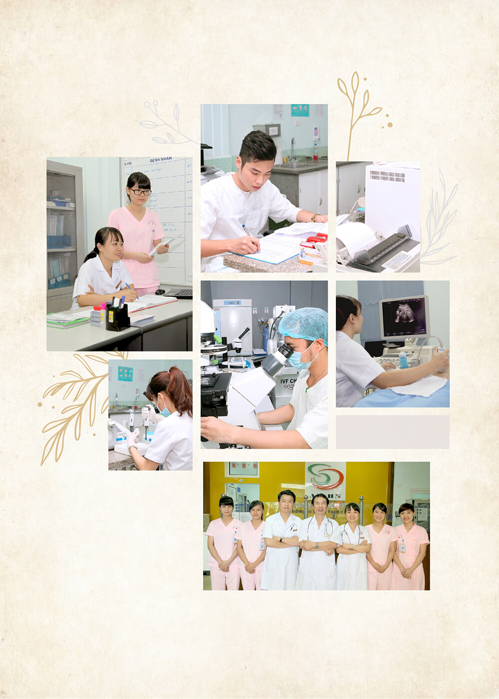
Sau quá trình tái cấu trúc Bệnh viện, các hoạt động thăm khám được tổ chức ổn định hơn và hình thành một số hoạt động nội bộ thể hiện tinh thần nhân văn cao đẹp. ThS.DS. Trịnh Tố Quyên chia sẻ: “Gắn bó với ngôi nhà AF HANOI, mình nhận thấy tình yêu thương và sự sẻ chia luôn được lan tỏa mạnh mẽ. Công đoàn khởi xướng hoạt động đóng góp, xây quỹ thiện nguyên chung để hướng tới việc giúp đỡ đồng nghiệp có hoàn cảnh khó khăn và các bệnh nhân có hoàn cảnh đặc biệt. Ban Lãnh đạo vô cùng hưởng ứng tinh thần đó và quyết định nhân đôi số tiền do CBNV đóng góp hàng tháng để lan tỏa nhiều hơn nữa tinh thần tương thân tương ái. Dần dần, Quỹ Tấm Lòng Vàng nhận thêm nhiều sự ủng hộ của đối tác, Mạnh Thường Quân và tổ chức thêm các buổi chia sẻ kiến thức chuyên môn, hỗ trợ một phần kinh phí điều trị cho những bệnh nhân khó khăn. AF HANOI được chứng kiến rất nhiều hoàn cảnh đặc biệt, những câu chuyện ấy luôn thôi thúc lòng trắc ẩn, tình yêu thương trong mỗi CBNV. Sau đó, Bệnh viện nhận thấy cần có sự hỗ trợ một cách bài bản, quy mô hơn nên từ năm 2015, chương trình Tuần Lễ Vàng chính thức được tổ chức và trở thành một hoạt động thường niên của AF HANOI từ đó đến nay.“
Là người trực tiếp tiếp nhận và tham gia vào quá trình xét duyệt hồ sơ cũng như hỗ trợ các bệnh nhân đến thăm khám, điều trị tại Bệnh viện, Điều dưỡng trưởng Phòng Khám – Nguyễn Thị Chung hiểu hơn ai hết giá trị của tinh thần lá lành đùm lá rách, cho đi là còn mãi: “Thật sự có rất nhiều ca bệnh hoàn cảnh đặc biệt khó khăn, có những cặp vợ chồng hiếm muộn lặn lội từ những vùng quê nghèo xuống Hà Nội tìm con, chỉ mang theo duy nhất vỏn vẹn 1-2 triệu đồng. Chứng kiến câu chuyện thương cảm như vậy, AF HANOI đã lan tỏa đúng ý nghĩa của nguồn Quỹ Tấm Lòng Vàng và triển khai thành công chương trình Tuần Lễ Vàng với các giá trị hỗ trợ không ngừng gia tăng mỗi năm.”
Trách nhiệm xã hội dần trở thành một nét đẹp riêng, xuất phát từ trái tim yêu thương, lòng thấu cảm của đội ngũ AF HANOI. Sứ mệnh nhân văn đó đã vượt ra khỏi những mục tiêu phát triển thương hiệu đơn thuần bởi chúng tôi hiểu rằng, mỗi hành trình tìm con lại thêu khắc một dư vị cảm xúc khác nhau về tình người và ẩn chứa sự thiêng liêng của thiên chức làm cha, làm mẹ.
Vượt qua những khó khăn ban đầu, Phòng Khám Đông Y Nguyễn Hữu Toàn (AF HANOI) không ngừng hoàn thiện bộ máy tổ chức, đầu tư hệ thống trang thiết bị y tế hiện đại và xây dựng đội ngũ nhân sự chuyên nghiệp. Các phòng ban trong khối hỗ trợ như: Quản lý chất lượng, Quản lý dịch vụ, Market- ing & Truyền thông, Phát triển kinh doanh được thành lập và đi vào hoạt động hiệu quả. Song song đó, các phương pháp điều trị mới liên tục được nghiên cứu và cập nhật, hướng tới cá thể hóa tối đa trong điều trị từng bệnh nhân. Nhờ đó, nhiều ca bệnh phức tạp đã được điều trị thành công, góp phần khẳng định vị thế của AF HANOI là một trong những đơn vị uy tín hàng đầu về lĩnh vực Hỗ trợ sinh sản, Vô sinh, Hiếm muộn, Nam khoa và Sản phụ khoa.
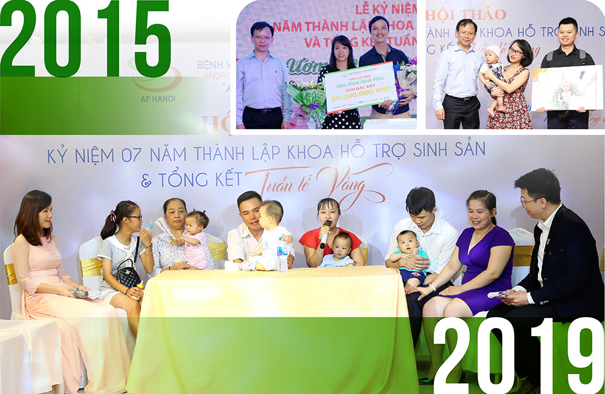
Một trong những dấu ấn quan trọng trong hành trình phát triển của Bệnh viện chính là việc thực hiện thành công kỹ thuật vi phẫu tinh hoàn tim tinh trùng (Micro TESE). Đây là kỹ thuật phức tạp, đòi hỏi sự phối hợp nhuần nhuyễn giữa kinh nghiệm chuyên môn cao của đội ngũ Bác sĩ và sự hỗ trợ của trang thiết bị hiện đại, giúp tìm kiếm những tinh trùng “quý hiếm” trong tinh hoàn của bệnh nhân vô tinh không do tắc. Với kỹ thuật này, rất nhiều cặp vợ chồng hiếm muộn mà người chồng không có tinh trùng đã được phẫu thuật tìm thấy tinh trùng để thực hiện IVF, giúp họ hiện thực hóa giấc mơ làm cha, làm mẹ.
ThS.BS. Đinh Hữu Việt – Trưởng khoa Nam học, chia sẻ về những khó khăn và trăn trở trong công tác điều trị: “Chúng tôi gặp rất nhiều trường hợp bệnh khó, mỗi bệnh nhân lại có nguyên nhân và mức độ khác nhau, như viêm teo tinh hoàn sau quai bị, đột biến gen, đột biến nhiễm sắc thể hay tinh hoàn ẩn, giãn tĩnh mạch tinh,… Nhưng điểm chung duy nhất của tất cả các ca bệnh là nỗi khao khát được làm cha, làm mẹ. Ước mơ đó không chỉ là hy vọng của người bệnh mà còn là niềm tin của cả gia đình họ. Dù trong giai đoạn đầu triển khai kỹ thuật mới còn nhiều hạn chế về cơ sở vật chất nhưng đội ngũ Y Bác sĩ đã không ngừng nâng cao trình độ và tâm huyết nhằm mang đến kết quả tốt nhất cho người bệnh.”
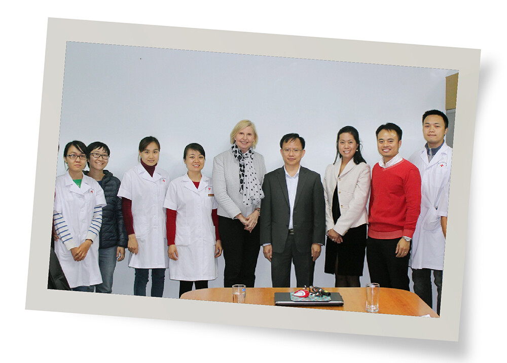
Phương pháp Micro TESE đã mở ra hy vọng mới cho nhiều bệnh nhân vô tinh như bệnh nhân có bất thường về nhiễm sắc thể mà hay gặp nhất là nam giới mắc hội chứng Klinefelter (47, XXY), đột biến mất vì mất đoạn gen AZF trên nhiễm sắc thể Y, teo tinh hoàn sau quai bị, tinh hoàn ẩn, giãn tĩnh mạch tinh, vô tình không rõ nguyên nhân và các trường hợp đã từng làm tiểu phẫu (PESA, TESE) không tìm thấy tinh trùng,… Các Bác sĩ Nam khoa của Bệnh viện đã thực hiện Micro TESE từ cuối năm 2016 – đầu năm 2017, cho đến nay đã thực hiện cho khoảng 3000 trường hợp vô tinh không bế tắc, với tỷ lệ tìm thấy tinh trùng khoảng 50-55%. Trong đó, phải kể đến tỷ lệ thành công của những trường hợp điển hình như Klinefelter là 45 – 55%, mất đoạn AZF là 60-70%, tinh hoàn ẩn 65-70% và đặc biệt nhất là quai bị teo tinh hoàn với tỷ lệ thành công gần như 100%.
Có nhiều câu chuyện thành công đầy xúc động từ những gia đình bệnh nhân không có tinh trùng phải thực hiện Micro TESE và IVF. Nhắc lại những kỷ niệm đáng nhớ, ThS.BS. Đinh Hữu Việt không khỏi xúc động khi kể về trường hợp vợ chồng anh Lý Chí Thanh và chị Phạm Thị Phượng ở Bắc Giang. Sau nhiều năm kết hôn nhưng không có con vì anh Thanh mắc quai bị teo hai tinh hoàn dẫn đến vô tinh, cả hai đã đi khắp nơi tìm kiếm hy vọng. Dù từng thất bại với 2 lần thực hiện TESE, nhưng nhờ sự tư vấn từ các Bác sĩ tại AF HANOI, anh Thanh quyết tâm thực hiện Micro TESE tim tinh trùng để làm IVF thêm một lần nữa. Kết quả vượt ngoài mong đợi – tinh trùng được tìm thấy, đủ để thực hiện Thụ tinh trong ống nghiệm cùng trứng của vợ. Năm 2018, gia đình anh chị chào đón bé gái đầu lòng sau 5 năm tìm con. Không dừng lại ở đó, vào tháng 4/2021, họ tiếp tục chào đón thêm 2 bé trai kháu khỉnh từ các phôi trữ trước đó. Trước đây, những trường hợp tưởng chừng không thể làm cha, phải nhờ đến tinh trùng hiến tặng, nay lại có cơ hội sinh con bằng chính tinh trùng của mình nhờ kỹ thuật vi phẫu Micro TESE. Những thành công này không chỉ đánh dấu bước tiến của y học mà còn là niềm tự hào và nguồn động lực to lớn cho đội ngũ Y Bác sĩ tại AF HANOI.
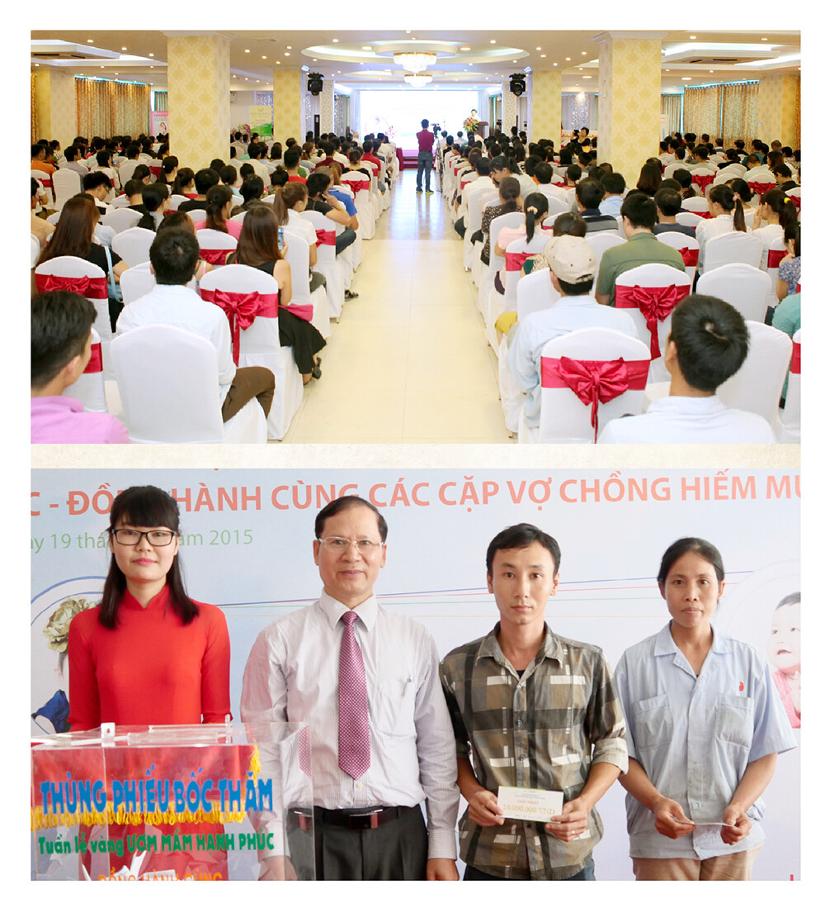
Bằng sự tận tâm và không ngừng nỗ lực đổi mới, Phòng Khám Đông Y Nguyễn Hữu Toàn đã mang đến hy vọng và niềm tin cho hàng ngàn gia đình hiếm muộn. Những thành tựu đạt được, đặc biệt trong lĩnh vực vi phẫu tinh hoàn tim tinh trùng không chỉ ghi dấu cột mốc quan trọng của Bệnh viện mà còn minh chứng cho sức mạnh của tình yêu nghề, sự đồng cảm với người bệnh và tinh thần tiên phong trong nghiên cứu và ứng dụng y học hiện đại.
Không chỉ khẳng định niềm tin với người bệnh thông qua tư vấn, điều trị mà AF HANOI còn ghi dấu ấn vượt trội với kỹ thuật nuôi cấy phôi. ThS. Nguyễn Minh Đức – Trường Labo Hỗ trợ sinh sản trực tiếp nghiên cứu, triển khai kỹ thuật nuôi phôi từ ngày 3 lên ngày 5. Đây là một trong những phương pháp góp phần tăng tỷ lệ chuyển phôi thành công của Phòng Khám Đông Y Nguyễn Hữu Toàn. Nhớ về khoảng thời gian bắt đầu thực hiện, ThS. Nguyễn Minh Đức tự hào chia sẻ: “Dù đã tiệm cận với mô hình nuôi cấy phôi tại nhiều trung tâm lớn trên thế giới nhưng việc bắt tay thực tế hóa điều đó cũng gặp khá nhiều trở ngại. Thời điểm đó, chủ yếu phôi được nuôi từ ngày 2 lên ngày 3. Số lượng phôi được nuôi lên ngày 5 thành công chưa đáng kể. Thực chất là do chúng ta chưa nắm chắc tuyệt đối kiến thức bản chất của môi trường nuôi cấy, một số vấn đề về quản lý chưa rõ ràng. May mắn, tại thời điểm đó, chúng ta luôn có nguồn bệnh nhân sẵn sàng phối hợp cùng Bệnh viện, đồng ý nuôi phôi lên ngày 5. Đến năm 2017, kỹ thuật dần ổn định và ghi nhận tỷ lệ thành công cao của các ca chuyển phôi ngày 5. Cùng với đó là những ca bệnh khó, thất bại chuyển phôi nhiều lần, có tiền sử lưu sảy thai,… đón được con yêu về nhà dưới sự đồng hành của Bệnh viện. Đây là thành tựu rất lớn, khẳng định bản lĩnh, trí tuệ và năng lực của AF HANOI. Giữ vững tâm niệm từ ngày đầu làm việc, mình tin rằng, sự chuyên nghiệp đến từ điều nhỏ nhất, hãy luôn thể hiện năng lực tốt nhất để đem đến hiệu quả cho người bệnh. Có được niềm tự hào quý báu này, sự đồng hành của Ban Lãnh đạo là điều đặc biệt quan trọng, mọi sự hỗ trợ kịp thời về tinh thần, cơ sở vật chất, thiết bị máy móc trở thành tiền đề vững chắc giúp Labo Hỗ trợ sinh sản hiện thực các kỹ thuật chất lượng cao.”
Với nền tảng chuyên môn vững vàng, tinh thần học hỏi không ngừng, Phòng Khám Đông Y Nguyễn Hữu Toàn tự hào đã giúp cho nhiều ca bệnh khó điều trị thành công. Trong những câu chuyện về hành trình tìm con, sự nỗ lực và kiên trì của gia đình Anh Việt – Chị Thủy luôn mang ấn tượng sâu sắc với đội ngũ Y Bác sĩ Bệnh viện. Hơn 19 năm tìm con, 10 lần chuyển phôi thất bại, anh Việt, chị Thuỷ đến với AF HANOI trong tâm trạng lo lắng và rụt rẻ. Dù động viên anh chị ấy: “còn nước còn tát” nhưng Bác sĩ Hiền khi ấy cũng trăn trở, áp lực vì phôi gần cạn kiệt, tuổi tác của chị Thủy lớn dần theo năm tháng. “Bao nhiêu lần gây mê, bao nhiêu lần chọc trứng, tiêm bao nhiêu thuốc, đổ bao nhiêu tiền, chờ đợi và rồi lại thất vọng, tôi đã từng không còn tin tưởng vào việc mình có thể tự mang thai nữa. Áp lực tâm lý lẫn áp lực kinh tế quá nặng nề. Nhưng khi gặp Bác sĩ Hiền, được Bác sĩ đưa lộ trình điều trị, động viên, tôi coi đây là cơ hội cuối cùng có thể được hưởng hạnh phúc từ nỗi vất và mang nặng đẻ đau của người phụ nữ. Và điều kỳ diệu thực sự đã đến. Giấc mơ của đời tôi giờ đã có thể chạm đến, nghe thấy. Nếu không có bác sĩ Hiền, có lẽ Mong Mỏi đã không thể ra đời”, chị Thuỷ không giấu nổi niềm vui xen lẫn lòng biết ơn đối với vị Bác sĩ đã hết lòng chữa trị cho vợ chồng mình. Đôi mắt hạnh phúc khi thấy que thử thai 2 vạch và vào đúng dịp kỷ niệm 20 năm ngày cưới, lần đầu vợ chồng chị được tận hưởng trọn vẹn thiên chức làm cha mẹ. Hai em bé Mong và Môi – cái tên gần gũi, thân thương ấy chính là món quà vô giá sau bao nỗ lực, đợi chờ. AF HANOI là điểm tựa niềm tin, thắp sáng hy vọng làm cha, làm mẹ của các cặp gia đình vô sinh, hiếm muộn. Bằng sự tận tâm, đồng cảm, thấu hiểu, chuyên môn vững vàng, Phòng Khám Đông Y Nguyễn Hữu Toàn đã khẳng định thế mạnh, chất lượng điều trị qua từng gia đoạn phát triển.
Từ năm 2016, đào tạo nhân lực chất lượng cao được Ban Lãnh đạo lựa chọn là hoạt động mũi nhọn trong định hướng phát triển bền vững của Bệnh viện. Chính vì vậy, Bệnh viện liên tục gửi CBNV tham gia học tập, bổ sung kiến thức tại các Trung tâm, đơn vị Hỗ trợ sinh sản trong nước cũng như quốc tế. Đặc biệt, cũng trong giai đoạn này, Ban Lãnh đạo nhận thấy và xác định cơ sở lý luận khoa học vững chắc sẽ giúp quá trình thăm khám, điều trị được diễn ra bài bản, chuyên nghiệp, đạt hiệu quả hơn. Ngày 25/10/2017, Bệnh viện chính thức thành lập Hội đồng khoa học Bệnh viện nhằm xây dựng, củng cố hoạt động nghiên cứu khoa học tại Bệnh viện. Từ đó, đóng góp được nhiều đề tài nghiên cứu có giá trị vào thực tế thăm khám và điều trị, không chỉ của chuyên ngành Hỗ trợ sinh sản mà còn của cả Bệnh viện nói chung. Mặc dù, công việc chuyên môn cũng chiếm nhiều quỹ thời gian đáng kể nhưng đội ngũ Bác sĩ, Chuyên viên phôi học, Kỹ thuật viên của Bệnh viện vẫn luôn đảm bảo và duy trì lịch tham gia sinh hoạt khoa học đều đặn hàng tuần vào các buổi trưa.
“Đối với người làm ngành y, nhất là lĩnh vực Hỗ trợ sinh sản luôn có những niềm vui đặc biệt vì đây là ngành tạo ra con người. Mỗi ngày học thêm một chút, mỗi ca bệnh lại đúc rút ra được thêm kinh nghiệm cho bản thân. Vì đây là một ngành mới nên Bác sĩ chỉ có cách đọc nhiều tài liệu, học nhiều, làm nhiều thì mới có thể hiểu hơn từng trường hợp các bệnh nhân” – BSCKI. Phạm Văn Hưởng tự hào khi nhắc đến tinh thần học tập, nâng cao chuyên môn, rèn luyện y đức của đội ngũ chuyên môn Bệnh viện.
Song hành cùng công tác khám chữa bệnh, nghiên cứu khoa học,… AF HANOI tiếp tục duy trì chương trình Tuần Lễ Vàng hàng năm, hỗ trợ các gia đình vô sinh, hiếm muộn trên hành trình tim kiếm con yêu. Với kinh nghiệm thăm khám và điều trị cho hàng ngàn gia đình mỗi năm, hơn ai hết, AF HANOI hiểu rằng chi phí cho một chu kỳ Thụ tinh trong ống nghiệm ở nước ta tuy thấp hơn các nước trong khu vực nhưng vẫn là một trở ngại đối với các gia đình Việt. Rất nhiều các gia đình mong con có hoàn cảnh khó khăn vẫn ngày đêm mong chờ phép nhiệm màu. Thấu hiểu và sẻ chia, bắt đầu từ năm 2019, bên cạnh Tuần Lễ Vàng, Bệnh viện triển khai chương trình hỗ trợ 10 ca Thụ tinh trong ống nghiệm miễn phí cho các gia đình hiếm muộn có hoàn cảnh khó khăn, giúp các cặp vợ chồng có thêm điểm tựa, động lực trên hành trình tìm kiếm niềm hạnh phúc trọn vẹn. Các gói hỗ trợ miễn phí 100% chi phí IVF đã trở thành chiếc phao cứu sinh cho rất nhiều gia đình hiếm muộn có hoàn cảnh khó khăn trên khắp cả nước. Chương trình giống như điểm tựa giúp các gia đình vững tin hơn trên hành trình chạm tới ước mơ con yêu sau nhiều năm mong chờ nhưng vì rào cản kinh tế nên buộc phải trì hoãn.
Câu chuyện của gia đình anh Triệu Văn Sơn và chị Triệu Thị Liên ở thôn Kim Long, xã Khánh Hoà, huyện Lục Yên, tỉnh Yên Bái là một minh chứng cho sự nỗ lực bền bỉ của các gia đình hiếm muộn cũng như sự chung tay của Phòng Khám Đông Y Nguyễn Hữu Toàn. Đoàn công tác của Bệnh viện đã phải vượt qua những đoạn đường đất đá, ô tô không thể đi được, vượt qua 4 con suối cùng 2 cây cầu dây vắt ngang sông mới đến được ngôi nhà nhỏ nằm sâu trong núi của đôi với chồng người Dao. Kết hôn từ 2010 những mãi không có con, hai vợ chồng cũng tìm đến rất nhiều bài thuốc nam, thuốc bắc đều không có kết quả. Đã có lúc chị Liên muốn buông xuôi, quyết tâm ly hôn để chồng có một tổ ấm mới bởi áp lực dư luận đè nặng lên đôi vai nhỏ bé của chị. Vì yêu vợ, anh Sơn nhất quyết không đồng ý, anh nói với chị Liên: “Nếu tận cùng mà vợ chồng mình vẫn không thể có con thì sẽ xin con nuôi”.
Và rồi, với số tiền ít ỏi từ việc trồng quế và cây lâm nghiệp, vợ chồng anh Sơn, chị Liên bàn nhau mỗi năm cố gắng dành dụm, hy vọng 10 năm nữa có thể đủ chi phí thực hiện IVF. Niềm hy vọng đó thực sự mong manh bởi mỗi tháng, thu nhập của hai vợ chồng chỉ vỏn vẹn vài trăm nghìn, nếu vào vụ mùa thì nhỉnh hơn một chút nhưng cũng không có gì là chắc chắn cho dự định 10 năm tiếp theo của họ. May mắn, năm 2019, anh chị đọc được thông tin về chương trình Tuần Lễ Vàng của Bệnh viện. Hai vợ chồng vay mượn được một triệu đồng để bắt đầu hành trình tìm con tại Bệnh viện. Không đủ chi phí để thăm khám, anh Sơn và chị Liên vào nghe tư vấn miễn phí, trình bày hoàn cảnh của mình. Hiểu được nỗi lòng, các nhân viên y tế của Bệnh viện vẫn tiếp nhận hồ sơ của hai vợ chồng. Sau khi khảo sát thực tế hoàn cảnh gia đình của hai vợ chồng, anh Sơn và chị Liên được chọn là một trong 10 cặp vợ chồng nhận gói hỗ trợ 100% chi phí thực hiện IVF (chương trình Tuần Lễ Vàng năm 2019). Chị Liên xúc động chia sẻ: “Nếu không có gói hỗ trợ này thì không 10 năm, sau, không chắc mình có đủ điều kiện điều trị không?”. Hạnh phúc biết bao khi giấc mơ con yêu đã thực sự đến gần hơn với anh Sơn, chị Liên. Trải qua quá trình thăm khám, điều trị, ngày 09/06/2020, bé Linh Đan và Linh Chi hai quả ngọt của cặp vợ chồng dân tộc thiểu số đã chào đã chào đời sau gần một thập kỷ mong ngóng, chờ đợi.
Vào năm 2024, nhân dịp kỷ niệm 15 năm thành lập Bệnh viện, con số này đã được tăng lên thành 15 ca IVF miễn phí để chắp cánh thật nhiều hơn nữa giấc mơ con yêu cho các gia đình hiếm muộn trên khắp cả nước. Đồng hành cùng AF HANOI luôn có sự chung tay, góp sức của các Nhà Hảo Tâm, đơn vị đối tác và đặc biệt là những gia đình đã đón con yêu thành công nhờ phương pháp hỗ trợ sinh sản tại Bệnh viện quay lại lan tỏa yêu thương cùng Bệnh viện. Tính từ năm 2019 đến nay, đã có hơn 100 cặp vợ chồng nhận gói hỗ trợ miễn phí thực hiện Thụ tinh trong ống nghiệm và hàng nghìn gia đình được hỗ trợ chi phí thăm khám, điều trị thông qua chương trình Tuần Lễ Vàng thường niên.
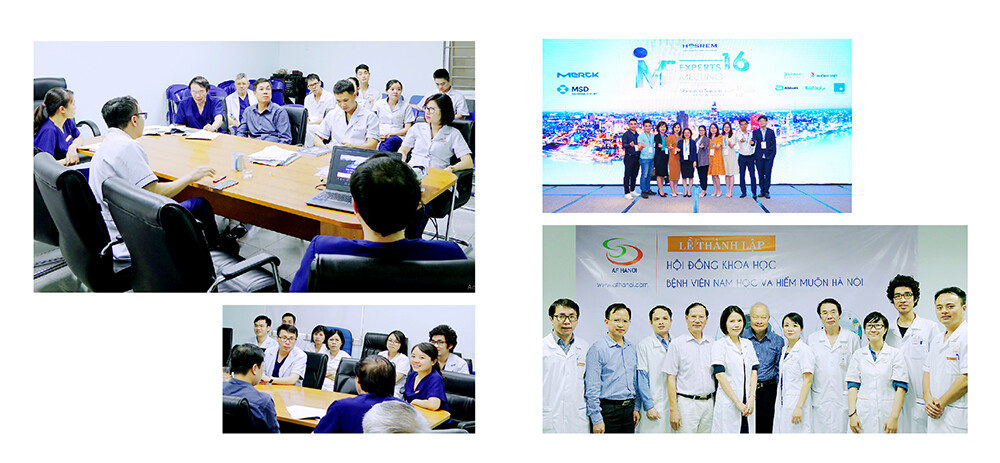
Từ những thế mạnh được xây dựng trong suốt hơn một thập kỷ, Ban Lãnh đạo và toàn thể CBNV mong muốn đưa thương hiệu AF HANOI vươn ra biển lớn, chinh phục các tiêu chuẩn quốc tế uy tín. Trong bối cảnh y học ngày càng phát triển, đặc biệt là lĩnh vực Hỗ trợ sinh sản, quản lý chất lượng không chỉ là yếu tố cốt lõi mà còn là vấn đề sống còn, quyết định sự tồn tại và phát triển của mỗi Bệnh viện. Quản lý chất lượng đòi hỏi độ chính xác, an toàn tuyệt đối, không chỉ ảnh hưởng tới tỷ lệ điều trị thành công mà còn đảm bảo sức khỏe, niềm tin và sự hài lòng của người bệnh.
ThS. Nguyễn Thu Hà – Trưởng phòng Kế hoạch tổng hợp và Quản lý chất lượng chia sẻ: “Liên quan đến công tác Quản lý chất lượng, Bộ Y tế đã ban hành đánh giá 83 tiêu chí chất lượng Bệnh viện. Khi nhận được chiếc USB của Chủ tịch Lê Trung Hiếu, trong USB đó chứa toàn bộ RTAC code được Úc phê duyệt năm 2014 và 262 bài báo tiếng Anh làm tài liệu căn cứ. Từ khi tham khảo tài liệu quý báu ấy, mình hiểu rằng, RTAC không phải chứng nhận để marketing thương hiệu mà trong vận hành thực tế, RTAC giúp cho Bệnh viện kiểm soát tiêu chuẩn chất lượng và người bệnh an tâm hơn, được đảm bảo quyền lợi tốt nhất khi được trải nghiệm dịch vụ thăm khám.”
RTAC (Reproductive Technology Accreditation Committee) là tiêu chuẩn quốc tế do Hiệp hội Sinh sản Úc (Fertility Society of Australia) ban hành. Chứng nhận RTAC công nhận Bệnh viện đáp ứng các tiêu chuẩn cao nhất về an toàn, hiệu quả, đạo đức trong lĩnh vực Hỗ trợ sinh sản và khẳng định uy tín, năng lực của Bệnh viện trên trường quốc tế. Người bệnh sẽ an tâm, tin tưởng hơn về quá trình thăm khám, điều trị. Đồng thời, chứng nhận RTAC còn đại diện cho lời cam kết về việc duy trì chất lượng và sự phát triển bền vững của đơn vị y tế.
Hiểu sâu sắc tầm quan trọng cũng như giá trị của Bộ Tiêu chuẩn quốc tế RTAC, Ban Lãnh đạo và tập thể CBNV Bệnh viện đồng lòng, quyết tâm từng bước tiến tới đạt được chứng nhận này. Không dừng lại ở những tiêu chuẩn trong nước, với tầm nhìn trở thành đơn vị Hỗ trợ sinh sản chất lượng quốc tế nhưng chi phí phù hợp với đại đa số người dân Việt Nam, Bệnh viện tiếp tục củng cố nền tảng và đặt mục tiêu chinh phục đỉnh cao mới.
2019 – 2022 là giai đoạn đánh dấu những đột phá, những bước đi táo bạo nhưng vô cùng vững chắc của AF HANOI. Năm 2019, Chủ tịch Lê Trung Hiếu từng bước chuyển giao quyền điều hành cho Tổng Giám đốc Nguyễn Văn Cường. Sự thay đổi cơ cấu điều hành là một trong những trong mục tiêu hàng đầu để chuẩn hóa quy trình, triển khai dịch vụ cao cấp nhằm nâng cao trải nghiệm khách hàng một cách bài bản dựa trên những phương pháp quản trị liên tục được cập nhật theo xu hướng của thời đại. Sự cộng hưởng linh hoạt các phương pháp quản trị đã giúp AF HANOI đạt trạng thái “tăng tốc” trên hành trình lan tỏa thương hiệu, khẳng định những “điểm sáng” ấn tượng trên “mặt trận chuyên môn”. Giai đoạn năm 2020 – 2021 là thời điểm biến động khó lường của đại dịch Covid-19, nền kinh tế – xã hội chịu nhiều ảnh hưởng, khủng hoảng xảy ra ở nhiều doanh nghiệp. Trước thực tế đó, nhiều thành viên của AF HANOI đã chia sẻ tâm tư với Ban Lãnh đạo, mong muốn dành phần lương hàng tháng đóng góp cho hoạt động vận hành Bệnh viện và đảm bảo quá trình thăm khám, điều trị cho người bệnh. Vô cùng trân quý, ghi nhận tấm lòng của anh chị em nhưng Ban Lãnh đạo quyết tâm xây dựng kế hoạch duy trì nguồn lực dài hạn, ổn định Bệnh viện và đời sống cho CBNV trong suốt thời gian dịch bệnh kéo dài, biến động xã hội, kinh tế khó khăn. Với mục tiêu “không ai bị bỏ lại phía sau”, ngoài chuẩn bị các phương án đảm bảo hoạt động, Ban Lãnh đạo vẫn dành sự quan tâm, kịp thời động viên, hỗ trợ gia đình CBNV có người thân bị ảnh hưởng bởi đại dịch.
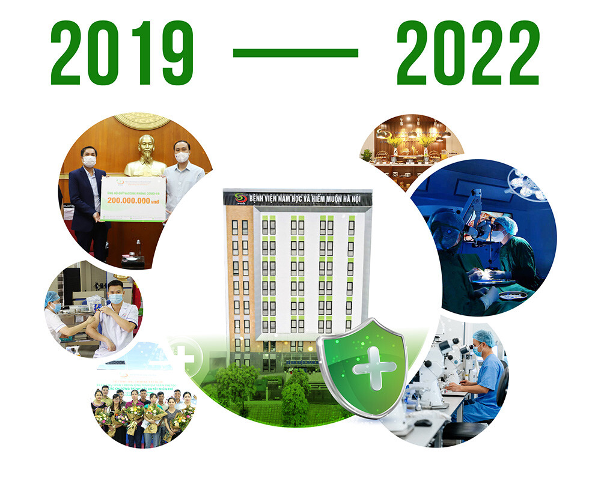
Đầu năm 2021, dự án toà nhà 9 tầng nâng cấp cơ sở vật chất được hoàn thành cùng với đó là việc thẩm định giấy phép hoạt động mới của Bệnh viện thành công, đưa toàn nhà mới đi vào hoạt động sau rất nhiều nỗ lực, quyết tâm của Ban Lãnh đạo và toàn thể CBNV. Tòa nhà được xây dựng trên khuôn viên 1200m2 gồm cơ sở vật chất, trang thiết bị hiện đại. Tổng Giám đốc Nguyễn Văn Cường bày tỏ quan điểm: “Trong những năm qua, Bệnh viện không ngừng sáng tạo, cải tiến, đổi mới nhưng vẫn giữ nguyên giá dịch vụ để đảm bảo phần lớn khách hàng có thể thăm khám với chi phí hợp lý nhưng chất lượng vượt trội. Nhằm tạo ra môi trường làm việc an toàn, chuyên nghiệp, đáp ứng vượt trên mong đợi của khách hàng, AF HANOI coi trọng việc xây dựng một nội bộ đoàn kết, gắn bó, hợp lực mà ở đó mỗi thành viên đều thấm nhuần giá trị tốt đẹp trong văn hóa tổ chức và được hưởng những chính sách đãi ngộ, chế độ phúc lợi tốt do Ban Lãnh đạo tâm huyết xây dựng”. Cùng với định hướng phát triển bền vững của Ban Lãnh đạo, Phòng Khám Đông Y Nguyễn Hữu Toàn ghi nhận tỷ lệ thăm khám tăng trưởng tích cực qua từng năm. Năm 2022, tỷ lệ bệnh nhân thăm khám tăng 189% so với năm 2018, tính riêng tỷ lệ thăm khám hiếm muộn tăng 197%. Bên cạnh đó, với số lượng thành viên chỉ vỏn vẹn vài chục y bác sĩ ngày đầu thành lập, sau 10 năm phát triển, năm 2019, chúng ta đã có gần 200 CBNV đồng hành dưới mái nhà chung AF HANOI. Và tính đến năm 2022, số lượng nhân sự đã lên tới hơn 300 CBNV (tăng 222% so với năm 2018).
Tiếp tục lan tỏa hoạt động trách nhiệm xã hội ý nghĩa, từ năm 2021, Phòng Khám Đông Y Nguyễn Hữu Toàn triển khai 10 gói hỗ trợ miễn phí 100% chi phí thực hiện Thụ tinh trong ống nghiệm cho gia đình Quân nhân hiếm muộn. Bởi lẽ, AF HANOI hiểu rằng với đặc thù thường xuyên phải công tác xa, đứa con chính là sợi dây gắn kết tình yêu thương của người lính nơi tiền tuyến với gia đình nơi hậu phương. Chương trình “Hỗ trợ Quân nhân hiếm muộn Yêu thương lan toà” là nguồn động viên, tiếp thêm niềm tin, sức mạnh cho các gia đình quân nhân trên hành trình tìm con. Là một trong 10 gia đình được nhận hỗ trợ năm 2022, anh Ngô Văn Cường và chị Nguyễn Thị Hạnh công tác tại kho quân khí 812, cục Quân khí, Tổng cục Kỹ thuật. Quay ngược thời gian, anh Cường và chị Hạnh kết hôn từ năm 2014, đến năm 2017, hai vợ chồng quyết định thực hiện IVF nhưng không thành công. Năm 2018, anh chị lại một lần nữa đặt cược tất cả những gì mình có vào lần điều trị này, tưởng chừng may mắn đã mỉm cười thì đến tuần thai thứ 26, chị Hạnh bị vỡ tử cung, em bé sinh non và không có sự sống. Khó khăn chồng chất khó khăn, bố và em trai chị Hạnh lần lượt mất vì ung thư… và rồi, mẹ chị cũng không may là người tiếp theo mắc căn bệnh này.
Hai vợ chồng đành tạm gác lại hành trình tìm con để chăm sóc mẹ. Về phần mình, anh Cường bị chứng viêm đa dây thần kinh phải chạy chữa hết bệnh viện này đến bệnh viện khác, hai vợ chồng suy sụp nặng nề cả về thể chất lẫn tinh thần. Đến cuối năm 2022, câu chuyện của gia đình anh Cường, chị Hạnh được chương trình Hạt mầm khát vọng do Trung tâm Phát thanh – Truyền hình Quân đội phối hợp tổ chức cùng Phòng Khám Đông Y Nguyễn Hữu Toàn tài trợ 100 triệu đồng. Cứ như thế, hai vợ chồng quay trở lại hành trình tìm con với phương pháp IVF tại Phòng Khám Đông Y Nguyễn Hữu Toàn. Sau ba lần chuyển phôi liên tiếp thất bại đến lần thứ 4, mầm phôi cuối cùng đã mang đến phép màu cho anh chị. ThS.BS. Lê Thị Thu Hiền cho biết: “Với tiền sử sinh non và vỡ tử cung đó là một trong những khó khăn, đặt ra thách thức rất lớn đối với đội ngũ chuyên môn Bệnh viện. Bên cạnh đó, dự trữ buồng trứng của bạn Hạnh suy giảm, làm cho kết quả phôi suy giảm theo. Với hai khó khăn rất lớn thì quá trình điều trị sẽ phức tạp hơn và kéo dài hơn trường hợp khác.” Và bằng sự kiên trì của hai vợ chồng anh Cường, chị Hạnh cùng sự tận tâm đội ngũ Y Bác sĩ Phòng Khám Đông Y Nguyễn Hữu Toàn, ngày 17/05/2024, anh chị đã được nâng niu trái ngọt trong vòng tay sau 10 năm đằng đẵng tìm con.
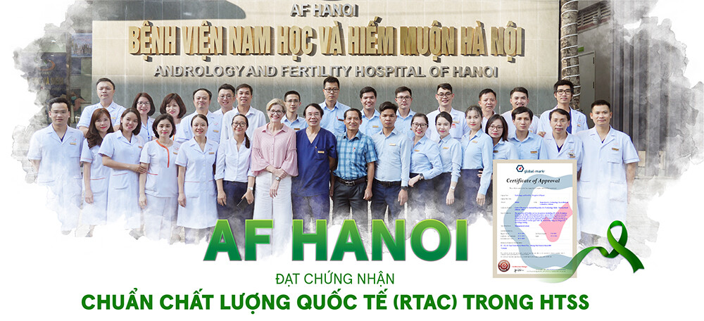
Con người chính là tài sản lớn nhất của tổ chức và AF HANOI tự hào có một tập thể CBNV luôn hết mình cống hiến cho sự nghiệp chung của Bệnh viện. Chính những nỗ lực của tập thể CBNV đã đưa con thuyền AF HANOI chinh phục niềm tin của khách hàng và khẳng định uy tín trong lĩnh vực Nam khoa, Vô sinh – Hiếm muộn. Hành trình “Kết nối yêu thương – Ươm mầm hạnh phúc” của AF HANOI đã được nối dài và lan tỏa tới khắp mọi miền đất nước nhờ những câu chuyện của các gia đình hiếm muộn đón được con yêu thành công tại Bệnh viện. Đội ngũ truyền thông của AF HANOI đã khắc họa những câu chuyện đó thông qua nhiều bài viết được đăng tải trên phương tiện truyền thông đại chúng, đi vào trong các tác phẩm truyền hình, trở thành nguồn cảm hứng, tiếp thêm động lực cho các gia đình đã và đang bước đi trên hành trình tìm kiếm thiên chức làm cha làm mẹ. Giai đoạn này, nổi bật là tác phẩm phim tài liệu “Rồi con sẽ về” đạt Giải Vàng liên hoan truyền hình toàn quốc lần thứ 39 đã mang đến cho cộng đồng góc nhìn đa chiều về vô sinh, hiếm muộn – một vấn đề “khó nói” trong xã hội. Trong kỷ nguyên số hóa, cách nhanh nhất để truyền tải thông điệp tới cộng đồng là thông qua các kênh nội dung số được xây dựng một cách bài bản. Chính vì vậy, với sự định hướng, chỉ đạo sát sao của Ban Lãnh đạo, hàng loạt kênh thông tin của Bệnh viện được hình thành và đưa vào hoạt động, kịp thời truyền tải nhiều thông điệp ý nghĩa tới cộng đồng, hỗ trợ khách hàng nhanh chóng, thuận tiện hơn.
Hiện thực hóa mong muốn của Chủ tịch Lê Trung Hiếu: “Đội ngũ CBNV tiếp tục chuyên nghiệp hóa chất lượng chuyên môn, đẳng cấp hóa chất lượng dịch vụ hướng đến tiêu chuẩn quốc tế trong tương lai gần.” Ngày 07/12/2022, Bệnh viện vinh dự trở thành một trong ba đơn vị đầu tiên tại miền Bắc được Hiệp hội Sinh sản Úc (Fertility Society of Australia – FSA) trao chứng nhận quốc tế RTAC – bộ tiêu chuẩn chất lượng uy tín nhất khu vực châu Á – Thái Bình Dương về hỗ trợ sinh sản. Đó là công sức, là giọt mồ hôi, nước mắt tự hào của hàng trăm con người cùng cống hiến suốt gần 15 năm xây dựng Bệnh viện và 4 năm kiên trì hoàn thiện hệ thống, cơ sở vật chất, quy trình và con người.
Dưới sự dẫn dắt của Hội đồng nghiên cứu khoa học, từ năm 2017 2024, năng lực nghiên cứu của đội ngũ chuyên môn thực sự được khẳng định mạnh mẽ, đã có gần 40 nghiên cứu được hoàn thiện. Cụ thể, chúng ta đã công bố 15 poster, 20 bài báo, 25 báo cáo trình bày trong hội nghị, hội thảo về Nam khoa, Hỗ trợ sinh sản, Sản phụ khoa, Y học giới tính. Đặc biệt phải kể đến 6 poster, 4 bài đăng tạp chí, 6 báo cáo trình bày trong các hội nghị, hội thảo quốc tế lớn. Nghiên cứu khoa học là công tác trọng điểm, phải dành nhiều thời gian, công sức thực hiện từ khi lựa chọn đề tài đến xây dựng để cương, phương pháp khảo sát, xử lý số liệu. Vì vậy, Ban Lãnh đạo luôn tạo điều kiện thuận lợi để Y Bác sĩ, Chuyên viên, Kỹ thuật viên hoàn thành đề tài nghiên cứu, đóng góp giá trị thiết thực vào lĩnh vực chuyên môn.
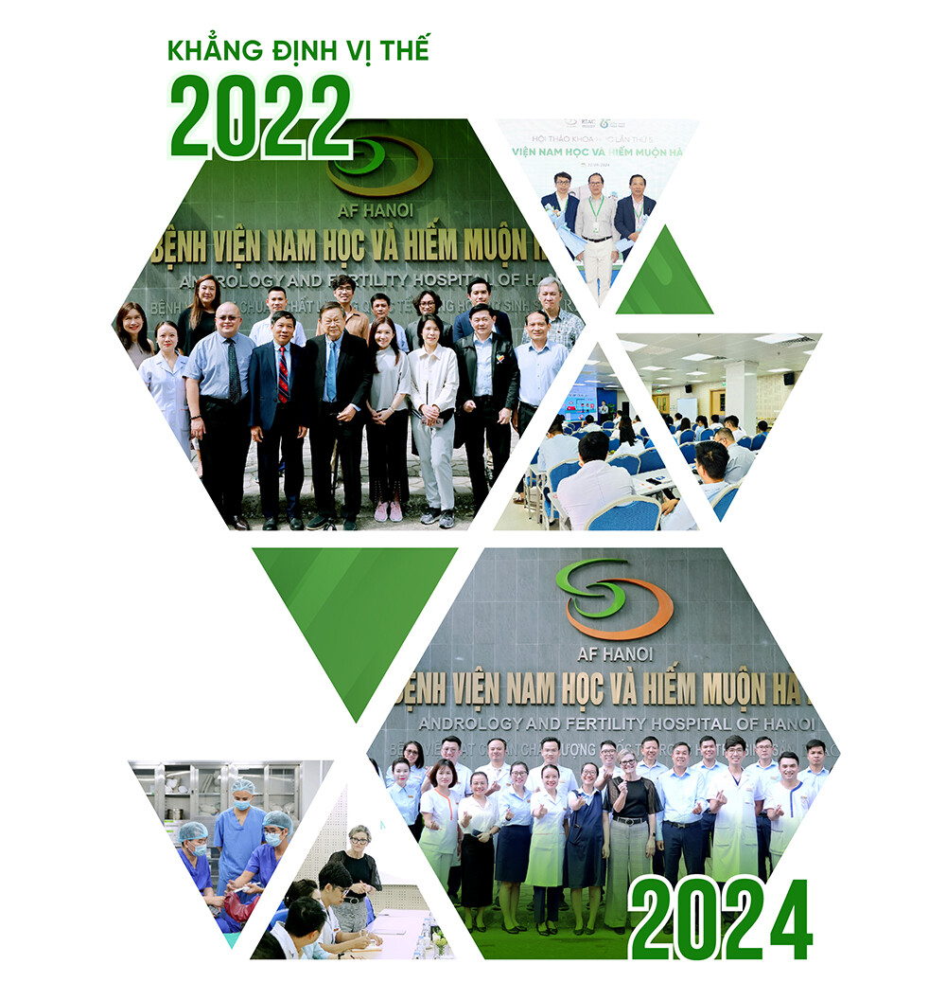
Ngày 15/12/2022, Bệnh viện chính thức công bố quyết định thành lập “Trung tâm Y học Giới tính Hà Nội CSM HANOI”. Việc thành lập trung tâm không chỉ khẳng định tầm nhìn phát triển của Ban Lãnh đạo mà còn thể hiện cách tiếp cận toàn diện mọi vấn đề của người bệnh. Chủ tịch Hồ Chí Minh vĩ đại đã từng đề cập đến trong bản Tuyên ngôn độc lập rằng: “Tất cả mọi người đều sinh ra có quyền bình đẳng. Tạo hóa cho họ những quyền không ai có thể xâm phạm được; trong những quyền ấy, có quyền được sống, quyền tự do và quyền mưu cầu hạnh phúc.” Hạnh phúc không chỉ là tình yêu mà đó là quyền được sẻ chia, thấu hiểu giữa con người với con người. Chia khóa “Hợp Tâm” được bắt nguồn từ 05 khía cạnh: Lắng nghe thấu cảm; Cởi mở đón nhận; Đánh giá đa chiều; Cung cấp giải pháp và đồng hành cùng người bệnh.
Song hành cùng sự phát triển của Bệnh viện, cơ sở vật chất là yếu tố then chốt, được Ban Lãnh đạo chú trọng đầu tư trong những năm qua. Đáp ứng nhu cầu khám chữa bệnh ngày càng cao của người bệnh, AF HANOI triển khai các công tác chuẩn bị xây dựng tòa nhà mới, dự kiến khởi công vào năm 2025. Tòa nhà mới khẳng định tốc độ phát triển của AF HANOI và khát vọng nâng cao hơn nữa chất lượng điều trị, hướng đến trải nghiệm dịch vụ xuất sắc vượt trội, môi trường làm việc lý tưởng trong tương lai gần.
Công đoàn Bệnh viện đã khẳng định được vai trò trong thực hiện hóa các chính sách phúc lợi cho CBNV, ThS.DS. Trịnh Tố Quyên tự hào bày tỏ: “Từ khi thành lập đến nay, Ban Lãnh đạo đã định hướng và kiện toàn tương đối hoàn thiện các chính sách. Công đoàn luôn quan tâm, động viên tinh thần, ổn định đời sống cho CBNV bằng nhiều hoạt động ý nghĩa. Mình tin rằng, bất cứ CBNV làm việc tại Bệnh viện đều có sự nghiệp phát triển bền vững và cuộc sống hạnh phúc. Gia đình của mỗi CBNV cũng sẽ cảm nhận được môi trường tại AF HANOI nhân văn, tử tế để họ luôn sẵn sàng tạo điều kiện cho người thân cống hiến hết mình vì công việc. Và cô đọng nhất đó chính là niềm tin, sự yêu thương để AF HANOI trở thành ngôi nhà thứ hai, gắn kết các thành viên lại với nhau”.
Trên góc độ trải nghiệm khách hàng, Chị Trần Bích Vân Trưởng phòng Quản lý dịch vụ và Chăm sóc khách hàng tâm huyết chia sẻ: “Nhân viên y tế và người bệnh là sợi dây đan kết rõ nét nhất, phản ánh chân thực giá trị nhân văn mà thương hiệu lan tỏa đến cộng đồng. Ban Lãnh đạo mong muốn tiếp tục lan tỏa mạnh mẽ hơn nữa những giá trị văn hóa tốt đẹp của AF HANOI đến với CBNV, khách hàng và cộng đồng. Với niềm tin rằng những nhân viên hạnh phúc sẽ mang lại những khách hàng hạnh phúc, từ đó, Bệnh viện đẩy mạnh củng cố văn hóa doanh nghiệp dựa trên các trụ cột văn hóa nền tảng, rèn luyện con người AF HANOI với những phẩm chất chung, góp phần gia tăng sự hài lòng của khách hàng, thực hiện hóa mục tiêu phát triển tổ chức. Cũng từ đây, khái niệm về Y khoa Hạnh phúc – Bệnh viện có những con người làm việc bằng sự tận tâm, trách nhiệm, tình yêu thương, sẻ chia bắt đầu được hình thành. AnFer – những CBNV đã, đang và sẽ làm việc tại AF HANOI luôn thấm nhuần tư tưởng, thẩm thấu văn hóa, chuẩn hóa hành vi để viết tiếp trang sử mới về một Hành trình an ươm hạnh phúc”.
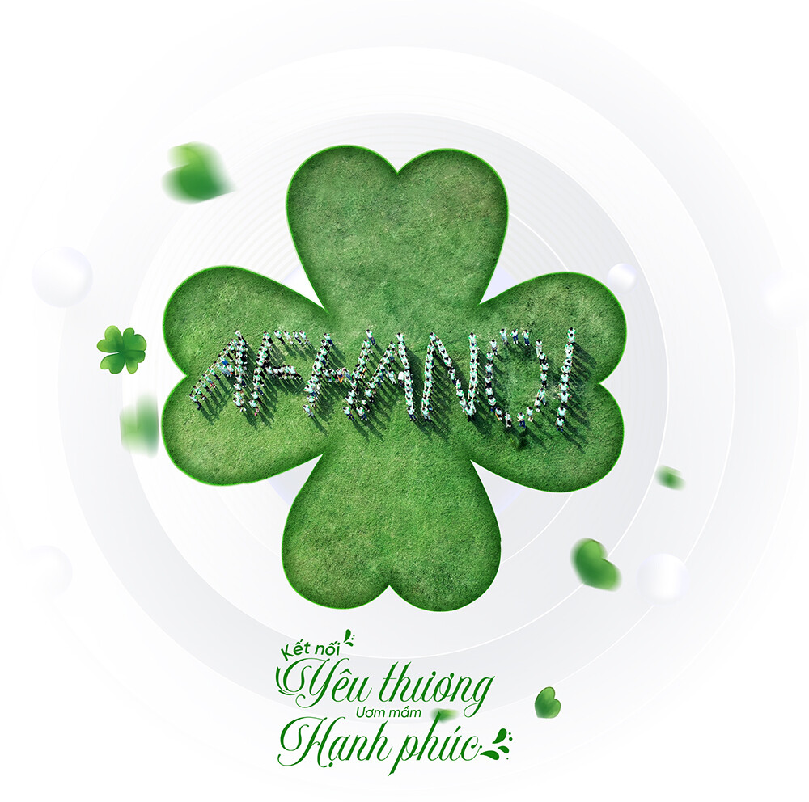